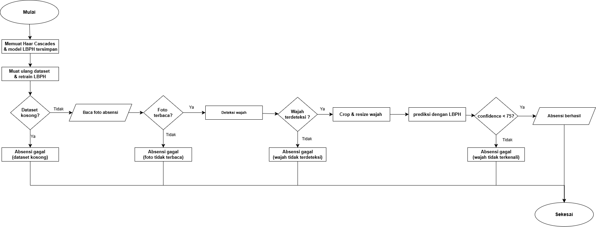
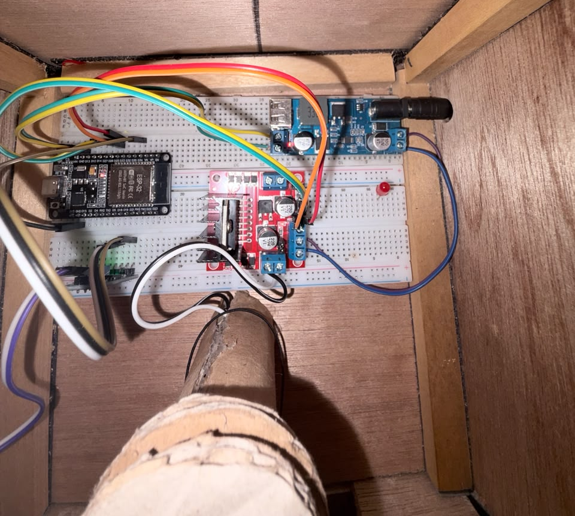
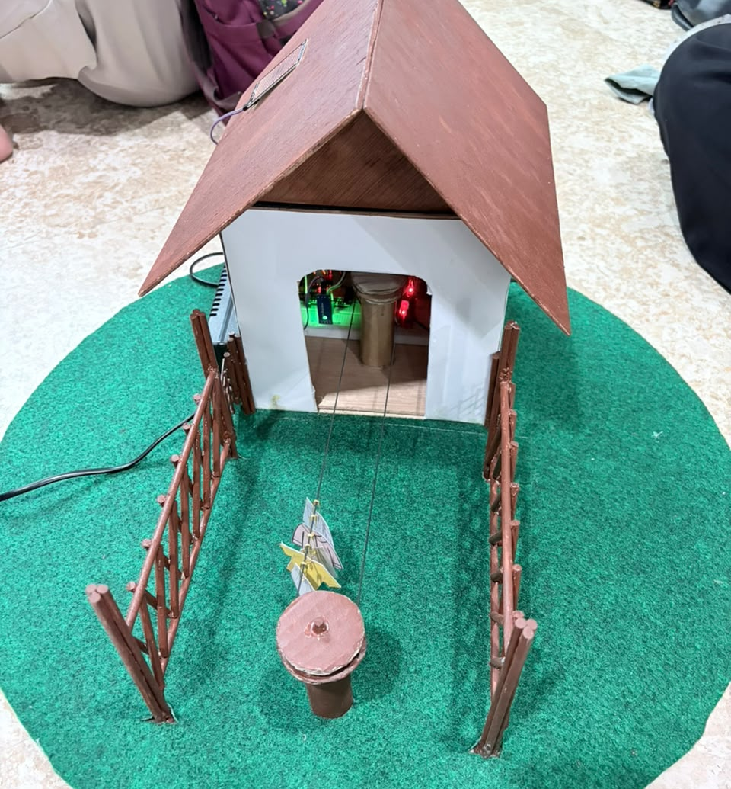

Mahasiswa Teknologi Informasi di Universitas BSI yang antusias dalam pengembangan perangkat lunak, sistem berbasis web, dan teknologi IoT. Memiliki rekam jejak kepemimpinan dalam memanajemen tim kreatif dan riset teknis, serta selalu berorientasi pada penyelesaian masalah (problem-solving). Siap berkontribusi dan berkembang melalui peluang magang di bidang IT.
Berikut adalah beberapa proyek unggulan yang telah saya kerjakan. Proyek-proyek ini merepresentasikan kemampuan saya dalam menganalisis masalah, merancang solusi dengan teknologi yang tepat (mulai dari sistem web hingga hardware IoT), serta mengimplementasikannya hingga berfungsi dengan baik.
Sistem absensi modern berbasis web ini dirancang menggunakan metode Rapid Application Development (RAD) untuk mengatasi masalah inefisiensi pada rekapitulasi absensi manual. Melalui proyek ini, saya mengimplementasikan teknologi pengenalan wajah (face recognition) serta merancang basis data yang terintegrasi secara real-time. Hasilnya, sistem ini mampu melakukan pencatatan kehadiran otomatis secara transparan, aman, sekaligus memangkas beban administratif.

Proyek IoT ini berfokus pada rancang bangun alat jemuran pintar sebagai solusi praktis menghadapi perubahan cuaca yang tidak menentu. Dengan mengintegrasikan sensor rintik air hujan dan mikrokontroler, jemuran dapat otomatis menarik pakaian ke area aman saat hujan. Proyek ini dikendalikan dari jarak jauh melalui aplikasi smartphone dan berhasil mengasah kemampuan problem-solving saya dalam troubleshooting serta integrasi hardware-software.


Saya sangat antusias untuk berkontribusi dan berkembang bersama tim Anda.